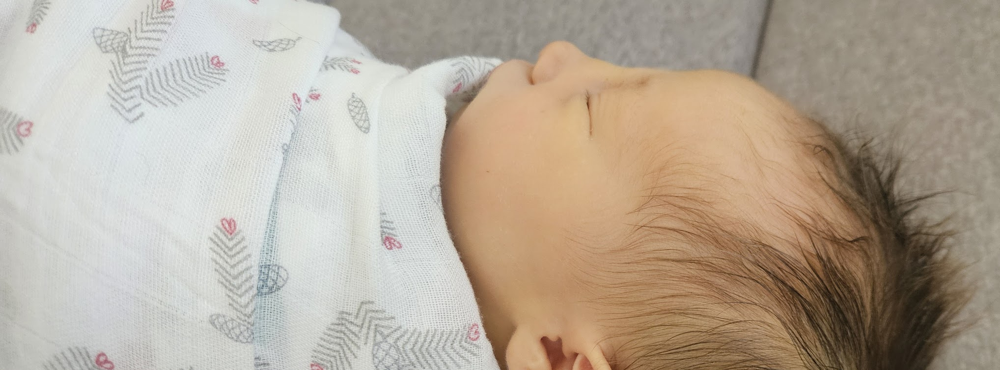
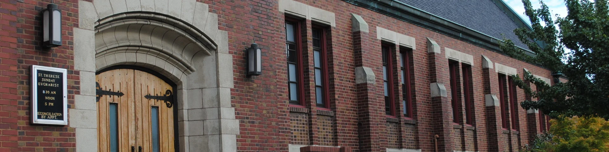

You are cordially invited to an exclusive gathering celebrating
Maelle Rose Nadeau
Sat — Sun · April 11–12, 2026

THE BABY
Maelle Rose
Born Tuesday · February 24, 2026
Maelle (or Maëlle) — feminine, French-derived name with deep Celtic (Breton) roots, meaning “chief,” “princess,” or “noble.” Pronounced “my-el,” a popular, elegant, and melodic name in France, often associated with strength and leadership.
Maelle arrived at Swedish Medical Center — which, amusingly, is also where Ali works. Few people can claim to have been born at their parent's workplace, but it happens once in a while. She doesn't have many opinions yet, though she's likely to appreciate what Mom and Dad love: great food, exploring the world, and enjoying life. Inspired by the 2026 Winter Olympics and Eric & Ali's shared fondness for skiing and shooting guns, they jokingly predict Maelle may one day be a Biathlete.
THE BBQ
PNW Welcome Picnic
Sat · April 11, 2026 · 1:00 – 6:00 PM
Eric and Ali are hosting a warm welcome picnic to bring their family from Rhode Island, Massachusetts, and South Carolina together with their Washington family. With friends and familiar recipes, they'll throw a relaxed BBQ much like the Seattle gatherings they've loved for years — a friendly welcome for their east-coast relatives as they join the west-coast family.
Getting there
Easily reached by car; follow local arterial routes toward Shoreline and use the Ashworth Ave N access. Rideshare drop-offs are straightforward near the property.
Parking
Street parking is readily available nearby; there is no driveway space here — please leave the moving truck at home (and maybe bring a folding chair instead).

THE BAPTISM
St. Therese Parish
Sun · April 12, 2026 · 11:00 AM–12:00 PM
Founded in 1926, St. Therese Parish in Madrona is a welcoming, diverse Catholic community known for its active parish life and pastoral outreach. Eric and Ali have resonated with the Jesuit ministry of the St. Joseph and St. Therese community; its emphasis on Jesuit values — education, social justice, and service to others — is a central reason they chose St. Therese for Maelle's baptism, and those values are evident in the community's thoughtful outreach and gracious hospitality.
Getting there
St. Therese is easily reached by car or local bus; Madrona and downtown routes connect nearby. Rideshare drop-offs are available at the parish entrance.
Parking
Street parking is readily available nearby, and there is a free lot directly in front of the parish for guests.
THE RECEPTION
Smith Tower Observatory
Sun · April 12, 2026 · 1:00–5:00 PM
Set within Seattle’s first skyscraper — the fourth-tallest building in the world at its completion in 1914 and the tallest on the West Coast until 1962 — please join us for a relaxed celebration for Maelle on the 35th floor in the historic Chinese Room. The building's preserved architecture and century-old observation deck offer a rare, panoramic window into Seattle's past, making Smith Tower an especially meaningful and atmospheric place to gather.
Admission, drinks, and food are provided for all invited guests.
Smith Tower historical museum walkthrough included.
Getting there
Smith Tower is a short walk from Pioneer Square and University Street stations. Rideshare drop-offs available on 2nd Ave.
Parking
Recommended: Butler Garage — 114 James St, Seattle, WA 98104 (short walk to Smith Tower).